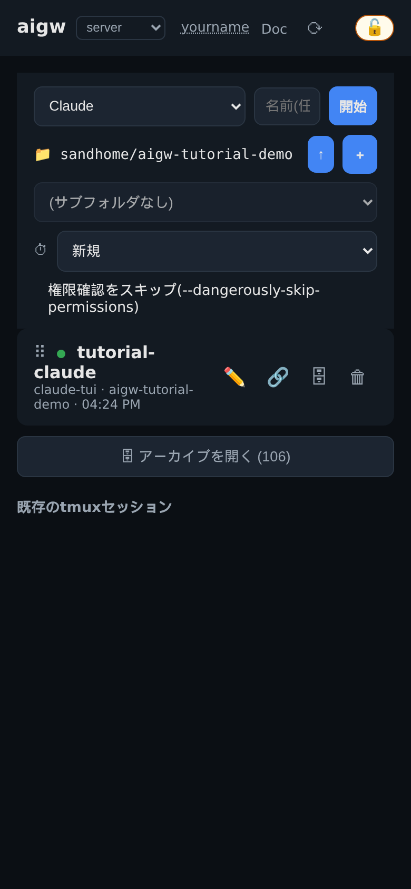
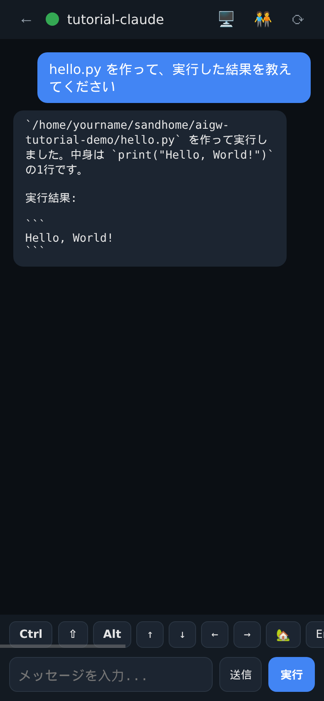
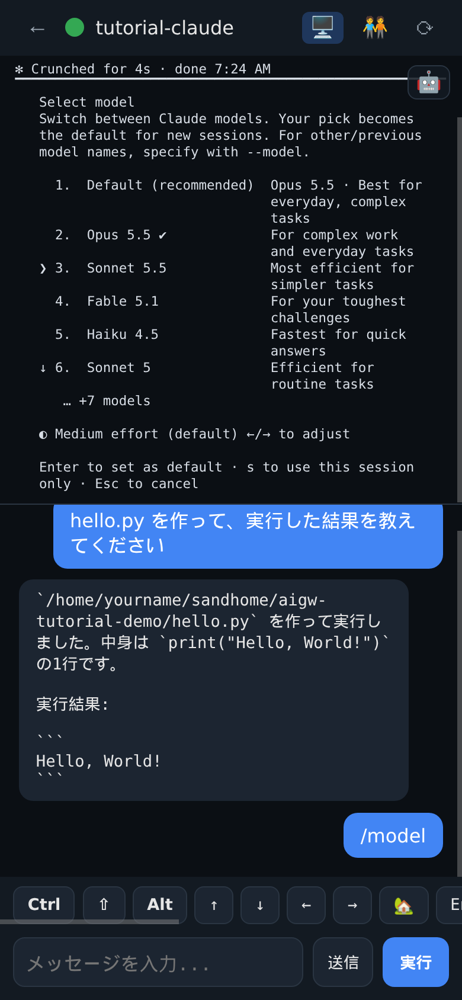
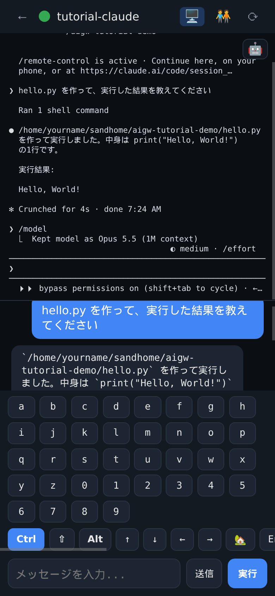
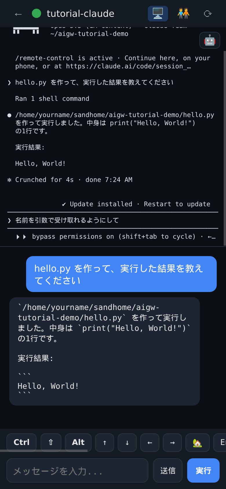
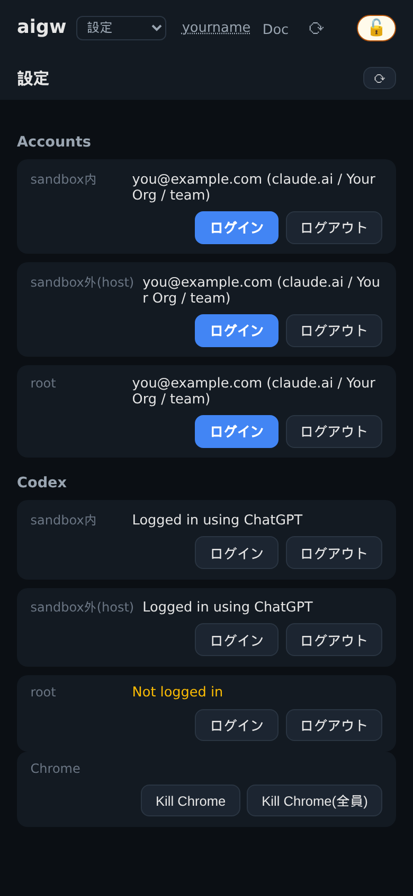
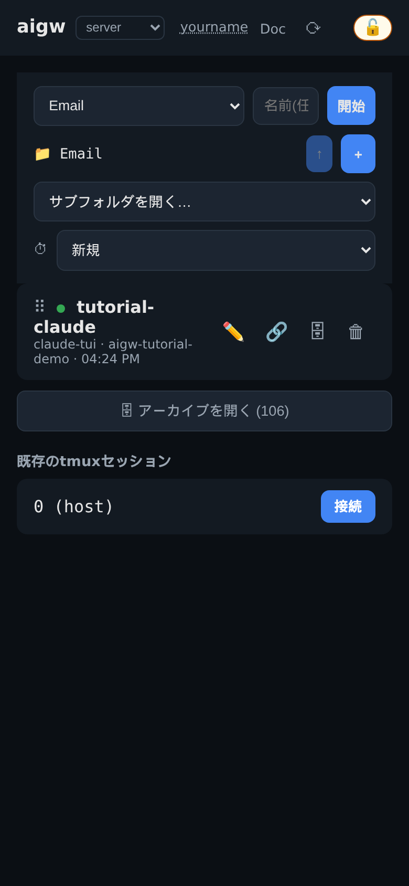

スマホや PC のブラウザから、サーバー上の AI エージェント(Claude Code など)を使うための手引きです。2026-10-09 時点の画面で説明します。サーバーごとに入っている機能が少し違うので、分からないところは管理者に確認してください。
aigw は https://<サーバー>/agents/ で開くチャット風の画面です。チャットに書いた指示は、サーバー上の自分専用のコンテナで動く Claude Code に届き、返事がチャットに戻ってきます。
管理者が許可したドメインの Google アカウントがあれば、aigw の画面から自分でアカウントを作れます(この機能を有効にしているサーバーの場合)。そうでなければ管理者に作ってもらいます。
https://<サーバー>/agents/ を開き、「Google でログイン」から許可されたドメインのアカウントを選びます。-・_。先頭は英小文字か _。32文字まで。aigw だけを使うなら SSH は不要です。ただし、Email やホストのシェルに使うパスキーの登録には SSH ログインが1回要るので、早めに済ませておくと楽です。
# 自分の PC で: もらった鍵を保存して権限を絞る
mv ~/Downloads/id_ed25519_<ユーザー名> ~/.ssh/
chmod 600 ~/.ssh/id_ed25519_<ユーザー名>
# 初回ログイン。ログイン直後にパスワードの設定を求められる
ssh -i ~/.ssh/id_ed25519_<ユーザー名> <ユーザー名>@<サーバー>パスワードは、この初回ログインで決めるまで誰にも使えない状態になっています。2回目からは同じコマンドで入れます。
aigw-set-email you@example.com を1回実行してください。そのメールアドレスの Google アカウントでログインできるようになります。aigw の画面は「セッション一覧」と「チャット」の2枚です。セッションとは、サーバー上で動き続ける1つの作業場所(Claude Code やシェル)のことです。

| 場所 | 意味 |
|---|---|
server の選択欄 | どのマシンで動かすか(ssh でつないだ他のマシンがあればここに並びます)。設定画面もここから選びます |
| ユーザー名 | タップするとログアウト |
Doc | サーバーのドキュメントを読む画面(サーバーによっては無い) |
⟳ | 再読み込み(上のバーを下にスワイプしても同じ) |
| 🔑 / 🔓 | パスキーで解錠中の印。🔑 はホストまで、🔓 はルートまで。タップするとすぐ施錠 |
| 作成欄 | 種類・フォルダ・名前を選んで 開始 |
| 各行の ● | 緑は動いている、灰色は終了したセッション |
| ⠿ ✏️ 🔗 🗄 🗑 | 並べ替え・名前の変更・他のセッションとつなぐ・アーカイブ(一覧から隠すだけ)・削除 |

| 場所 | 意味 |
|---|---|
← | 一覧へ戻る(画面を右へスワイプしても戻れます) |
| ● (名前の左) | 動いているか。長押しで強制終了(確認が出ます) |
| 🖥️ | ターミナル画面(画面パネル)を開く・閉じる。5章 |
| 🧑🤝🧑 | このセッションを他の人と共有する。会話の保存(💾)もこの中 |
| キーの列 | Ctrl ⇧ Alt ↑ ↓ … 横にスクロールでき、右端に 📎(ファイル添付)。4章 |
| 送信 / 実行 | 実行は Enter 付き、送信は Enter なし。4章 |
セッションはブラウザを閉じても動き続けます。一覧から開き直せば、そのまま続きを見られます。スマホでは「ホーム画面に追加」しておくと、返事が来たときに通知が届きます(iPhone ではこれが必須です)。
普段は Claude を選んでセッションを作り、チャットで指示するだけです。Claude は自分専用のコンテナ(砂場)の中で、ファイルを作り、コマンドを実行します。
sandhome(コンテナの中のホーム)です。
↑ で上へ移動します。＋ で今いる場所に新しいフォルダを作れます。/remote-control の案内)。| ボタン | 送るもの | 使うとき |
|---|---|---|
| 実行 | 文字 + Enter。入力欄が空なら Enter だけ | 普段の指示。選択メニューで今の項目に決めたいときは、空のまま実行 |
| 送信 | 文字だけ(Enter なし) | メニューが出ている最中に文字を入れたいとき、コマンドを途中まで打って Tab 補完したいとき |

/model のメニューで ↓ を押したところ。❯ が動いたのは画面パネルでだけ見えます
| したいこと | 押すキー |
|---|---|
| Claude の作業を止める | Esc |
| シェルのコマンドを中断 | Ctrl → c |
| メニューの項目を選ぶ | ↑ ↓ で動かし ⏎(または空のまま 実行) |
| メニューを閉じる | Esc |
| Claude のモード(権限確認・計画モード)を切り替える | ⇧Tab |
| 前に送った指示を呼び出す | ↑ |
サーバー上では、Claude やシェルは本物のターミナルの中で動いています。aigw はその様子を2つの形で見せます。

作成欄の種類は「どこで動くか」が違います。普段使うのは砂場(Claude・Codex・Shell (sandbox内))だけです。
| 種類(作成欄の表示) | 動く場所 | 見えるもの | パスキー | 使いどころ |
|---|---|---|---|---|
| Claude / Codex / Shell (sandbox内) | 砂場: 自分専用のコンテナ | ~/sandhome だけ | 不要 | 普段の開発すべて |
| Email の箱: 砂場とは別のコンテナ(設定されたサーバーだけ) | ~/mailbox だけ | 🔑 ホスト階層 | メールや個人情報など、開発用の砂場に置きたくないもの | |
| Shell (sandbox外・ホスト) | サーバーそのもの、自分の権限 | 本物のホーム(~/)など | 🔑 ホスト階層 | コンテナの外のファイルを触るとき |
| Shell (root・sandbox外) | サーバーそのもの、root | すべて | 🔓 ルート階層 | サーバーの管理。許可された人だけに表示 |
~/sandhome の外には届きません。だから権限確認をスキップしても安全です。npm install で入ってきた他人のパッケージも動きます。メールのような情報をそこに置くと、それらからも読めてしまいます。Email の箱は砂場から見えない別のコンテナで、会話の記録も ~/mailbox の側に残ります。Claude を初めて使う前に、使う場所ごとに1回ずつ Claude にログインします。砂場・ホスト・ルート・他のマシンでログイン情報は別々です。Email の箱だけは設定画面に行が無く、箱の中でログインします。

トップ画面のマシン選択(server の欄)で設定を選びます。戻るときは、同じ欄で server(このサーバー)を選び直します。
Email・ホスト・ルートのようにコンテナの外へ出るときは、パスキー(スマホの指紋・顔認証や PC の PIN で守られた鍵)で解錠します。aigw のログインが盗まれても、手元の端末が無ければ外には出られないようにするためです。
ssh <ユーザー名>@<サーバー>
aigw-passkey registeraigw-passkey list、今の状態は aigw-passkey status で見られます。
~/mailbox から始まり、Claude と同じように下のフォルダを選んだり、＋ で作ったりできます。~/mailbox は最初は空なので、使いたい道具(メールを読むスクリプトなど)は自分で、または Claude に頼んで用意します。ルート(サーバーの管理者権限)は、管理者が許可した人だけが使えます。経路は2つあり、どちらも本人の操作が要ります。
sudo aigw-passkey register <ユーザー名> --tier rootsudo を使うサーバーで sudo を許可されている人は、SSH で入って sudo を使えます。誰に許可するかは管理者が決めます。
| 症状 | 対処 |
|---|---|
| aigw にログインできない | 許可されたドメインのアカウントを選んでいるか確認。管理者が作ったアカウントなら、SSH で aigw-set-email を実行(1章) |
| Claude が何も返さない・ログインを求められる | 設定画面で、その場所の行が「Not logged in」になっていないか確認してログイン(7章) |
| チャットが止まって見える | 🖥️ で画面パネルを開く。メニューや確認の質問で止まっていることが多いので、キーの列で答える |
| キーを押しても反応が見えない | チャットにはその場の書き換えが出ないため。画面パネルで確認する(5章) |
| Email やホストのシェルが「解錠」を求めて進まない | パスキーを登録したか、その端末で登録したかを確認(9章)。施錠中の帯が出ていればタップ |
| Claude の作業を止めたい | Esc。それでも止まらなければ、名前の左の ● を長押しして強制終了 |
| 画面が古いまま | 右上の ⟳ か、上のバーを下にスワイプ |
| それでも分からない | 管理者に相談 |